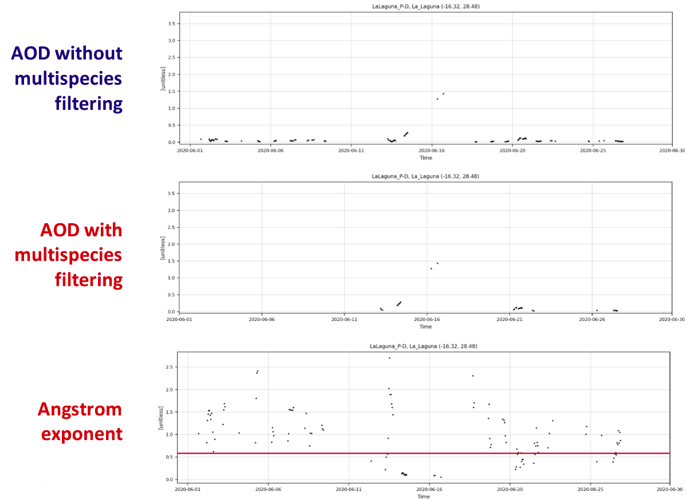
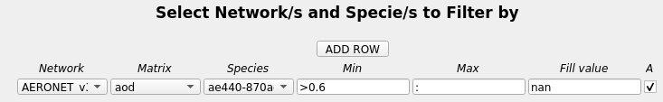

Multispecies filtering
Multispecies filtering refers to the ability to filter loaded species data by the values of another species.
For example, when performing investigations of dust in the atmosphere it is a common practice to filter the AOD by the Angstrom exponent, to isolate values associated with dust. For instance, we can set the AOD to be nan when the Angstrom exponent is above 0.6, removing all non-dust AOD.
If we take a look at the timeseries for one station, we can see what this actually means:

It can be observed that there are less data points for AOD after the filtering is applied, with the removal of the data points happening when the Angstrom exponent is above 0.6.
Multispecies filtering can be set in the configuration files using the filter_species variable, where we define the network and species to filter by, the lower range to filter associated data by, the upper range to filter associated data by, and the value to set associated data to (default is nan). If you want to leave one of the filter ranges open-ended, then use a colon (:). Spatial colocation must be active in order to apply multispecies filtering (it is active by default).
[All]
network = AERONET_v3_lev1.5
species = od550aero
filter_species = AERONET_v3_lev1.5:ae440-870aero (>0.6, :, nan)
spatial_colocation = True
On the dashboard this can be replicated under the MULTI button on the menu bar. The apply (A) checkbox must be checked to apply the filter, and then data re-read by hitting the READ button on the main menu bar.

It is also possible to filter data by more than one species at a time, for example:
network = nasa-aeronet/directsun_v3-lev15
species = od550aero
filter_species = nasa-aeronet/directsun_v3-lev15:ae440-870aero (>0.75, <=1.2, nan), nasa-aeronet/directsun_v3-lev15:ae440-870aero (>1.2, :, 0)
spatial_colocation = True